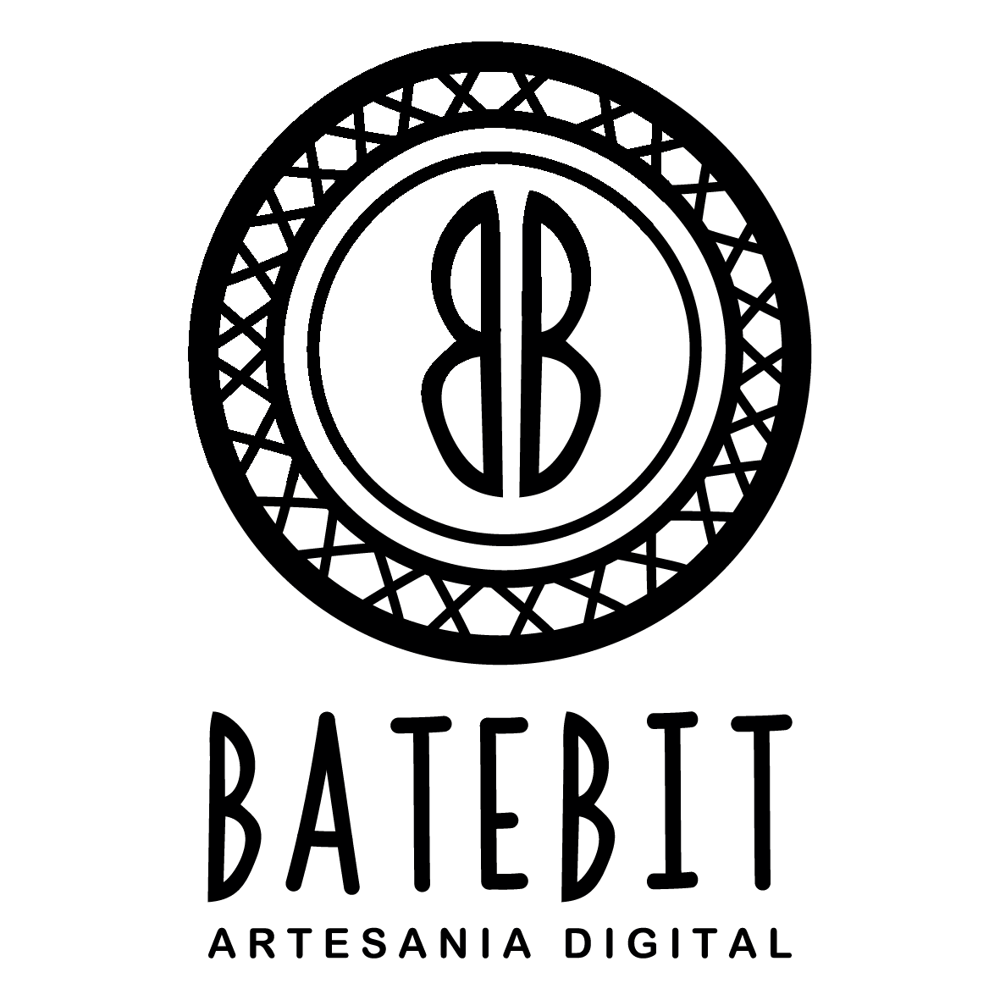

// dia 1 — apresentação
Introdução à
Programação
Através da
Dança_
João Tragtenberg & Iara Izidoro
// NIME LATAM
// mustic
// batebit

// bongarbit

// Agbau
// Botões Falantes
// Engome Adubado
// Helder Vasconcelos — Tumtá e Pisada
// Piso Interativo — espaço que responde
// O Agora Não Confabula com a Espera — Iara Izidoro
// Gira
// Con---tact
// Giromin — residência com Orun Santana
// Abertura do Carnaval
// Porto Mídia
// Palco Marco Zero
// agora